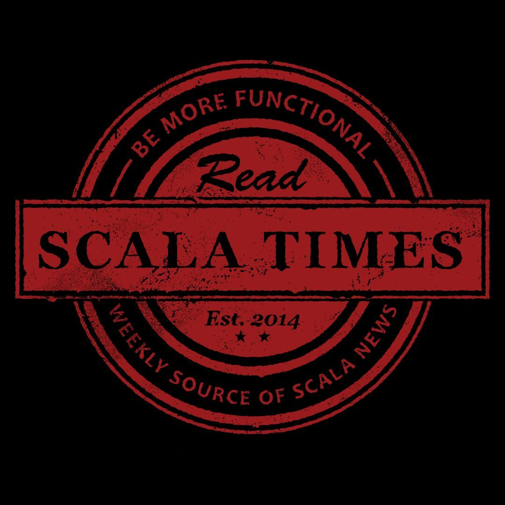

## ## Unwrapping IO #### Is it a path that you want to follow? Adam Warski, February 2024 <a href="https://twitter.com/adamwarski">@adamwarski</a> / <a href="https://softwaremill.social/@adamwarski">@softwaremill.social</a> <a href="https://softwaremill.com"><img src="img/sml.png" alt="SoftwareMill logo" style="height: 180px;"></a>
How did we end up with IOs?
thread-per-request
callbacks
Future
s
IO
s
What did Loom introduce in Java 21?
lightweight threads on the JVM
built-in asynchronous runtime
retrofitting blocking operations
Goal: simplify asynchronous programming
Same underlying idea: multiple **threads** / **fibers** are scheduled to run on a small pool of **platform / OS threads** --- ### Problems that Loom tries to solve: 1. lost control flow 2. lost context 3. virality --- ### How do functional effect libraries fit in? What started as "better Futures", ended up bringing convenience and safety to many more areas <!-- .element: class="fragment" --> --- - error handling - resource management - refactoring - interruptions - high-level concurrency - streaming - ... --- ### Functional vs. direct Which one to choose? Definitely **not** a no-brainer! <!-- .element: class="fragment" --> --- ### Contenders * Futures: Scala's std lib, Pekko, Akka * Functional: cats-effect, ZIO, kyo * Direct: ox, gears --- ### Let's zoom in ... * Futures: Scala's std lib, Pekko, Akka * Functional: cats-effect, **ZIO**, kyo * Functional+direct: cats-effect-cps, **ZIO-direct**, kyo-direct * Direct: **ox**, gears
### Syntax overhead: ZIO ```scala import zio.{Task, ZIO} def fetchPassengers(): Task[List[Passenger]] = ??? def prepareLaunch(ps: List[Passenger]): Task[LaunchParams] = ??? def attachBoosters(): Task[Unit] = ??? def fuelUp(stage: RocketStage): Task[Unit] = ??? def pressBigRedButton(): Task[Unit] = ??? ``` --- ### Syntax overhead: ZIO ```scala [1-7|4|5] val result: Task[Unit] = for { passengers <- fetchPassengers() params <- prepareLaunch(passengers) _ <- if params.farAway then attachBoosters() else ZIO.unit _ <- ZIO.foreachDiscard(params.rocketStages)(fuelUp) _ <- pressBigRedButton() } yield () ``` --- ### Syntax overhead: ZIO-direct ```scala [1-11|5-7|9] val result: Task[Unit] = defer { val passengers = fetchPassengers().run val params = prepareLaunch(passengers).run if (params.farAway) { attachBoosterRockets().run } params.rocketStages.foreach(stage => fuelUp(stage).run) pressBigRedButton().run } ``` --- ### Syntax overhead: direct ```scala def fetchPassengers(): List[Passenger] = ??? def prepareLaunch(ps: List[Passenger]): LaunchParams = ??? def attachBoosters(): Unit = ??? def fuelUp(stage: RocketStage): Unit = ??? def pressBigRedButton(): Unit = ??? ``` --- ### Syntax overhead: direct ```scala [1-10|4-6|8] val passengers = fetchPassengers() val params = prepareLaunch(passengers) if params.farAway then { attachBoosterRs() } params.rocketStages.foreach(stage => fuelUp(stage)) pressBigRedButton() ``` --- <table> <thead> <tr> <th></th> <th>Syntax overhead</th> </tr> </thead> <tbody> <tr> <td>ZIO</td> <td style="background-color: #B71C1C; text-align: center;">high</td> </tr> <tr> <td>ZIO-direct</td> <td style="background-color: #F57F17; text-align: center;">mixed</td> </tr> <tr> <td>Direct</td> <td style="background-color: #558B2F; text-align: center;">low</td> </tr> </tbody> </table>
### Error handling: ZIO ```scala abstract class AppException extends Exception class UserNotFoundException extends AppException class InvalidPasswordException extends AppException ``` --- ### Error handling: ZIO ```scala [1-2|4-7|9-12] val failingProgram: ZIO[Any, AppException, String] = ZIO.fail(UserNotFoundException()) val resultCatchAll: ZIO[Any, Nothing, String] = failingProgram.catchAll { case _: UserNotFoundException => ZIO.succeed("✅") } val resultCatchSome: ZIO[Any, AppException, String] = failingProgram.catchSome { case _: InvalidPasswordException => ZIO.succeed("✅") } ``` --- ### Error handling: ZIO ```scala // ... for { r1 <- resultCatchAll _ <- Console.printLine(r1) r2 <- resultCatchSome _ <- Console.printLine(r2) } yield () ``` gives: ``` ✅ timestamp=2024-02-01T14:08:18.365586Z level=ERROR cause="Exception in thread "zio-fiber-4" pres.UserNotFoundException: null at pres.ZioHandleErrors$.$anonfun$1(Errors.scala:12) at zio.ZIO$.fail$$anonfun$1(ZIO.scala:3148) ``` --- ### Error handling: ZIO ```scala [1|3-5] val failingProgram: UIO[Int] = ZIO.succeed(1 / 0) val result1: ZIO[Any, Nothing, Int] = failingProgram.catchAll { case _: Exception => ZIO.succeed(42) } result1.flatMap(Console.printLine) ``` gives: ``` timestamp=2024-02-01T14:25:16.796297Z level=ERROR cause="Exception in thread "zio-fiber-4" java.lang.ArithmeticException: / by zero at pres.ZioDefects$.$anonfun$3(Errors.scala:26) ``` --- ### Error handling: ZIO ```scala [1|3-5] val failingProgram: UIO[Int] = ZIO.succeed(1 / 0) val result2: ZIO[Any, Nothing, Int] = failingProgram.resurrect.catchAll { case _: Exception => ZIO.succeed(43) } result2.flatMap(Console.printLine) ``` gives: ``` 43 ``` --- ### Error handling: direct ```scala [1|3-4|6-7] def failingProgram: String = throw UserNotFoundException() def result1: String = try failingProgram catch case _: UserNotFoundException => "✅" def result2: String = try failingProgram catch case _: InvalidPasswordException => "✅" println(result1) println(result2) ``` gives: ``` ✅ Exception in thread "main" pres.UserNotFoundException at pres.Errors$package$.failingProgram$1(Errors.scala:52) at pres.Errors$package$.result2$3(Errors.scala:57) at pres.Errors$package$.directHandleErrors(Errors.scala:61) at pres.directHandleErrors.main(Errors.scala:51) ``` --- <table> <thead> <tr> <th></th> <th>Error handling</th> </tr> </thead> <tbody> <tr> <td>ZIO</td> <td style="background-color: #558B2F; text-align: center;">safe</td> </tr> <tr> <td>ZIO-direct</td> <td style="background-color: #558B2F; text-align: center;">safe</td> </tr> <tr> <td>Direct</td> <td style="background-color: #F57F17; text-align: center;">some</td> </tr> </tbody> </table>
### Stack traces: ZIO ```scala object ZioStackTraces extends ZIOAppDefault: override def run: ZIO[Any, Exception, Any] = def a() = ZIO.fail(new Exception("boom!")) def b() = Console.printLine("In b") *> a() def c() = Console.printLine("In c") *> b() def d() = Console.printLine("In d") *> c() d() ``` gives: ``` In d In c In b timestamp=2024-02-01T14:45:56.872242Z level=ERROR cause="Exception in thread "zio-fiber-4" java.lang.Exception: boom! at pres.ZioStackTraces$.a$1$$anonfun$1(StackTraces.scala:8) at zio.ZIO$.fail$$anonfun$1(ZIO.scala:3148) at zio.ZIO$.failCause$$anonfun$1(ZIO.scala:3157) at pres.ZioStackTraces.run.a(StackTraces.scala:8)" ``` --- ### Stack traces: direct ```scala object DirectStackTraces extends App: def a() = throw new Exception("boom!") def b() = { println("In b"); a() } def c() = { println("In c"); b() } def d() = { println("In d"); c() } d() ``` gives: ``` In d In c In b Exception in thread "main" java.lang.Exception: boom! at pres.StackTraces.a$2(StackTraces.scala:26) at pres.StackTraces.b$2(StackTraces.scala:27) at pres.StackTraces.c$2(StackTraces.scala:28) at pres.StackTraces.d$2(StackTraces.scala:29) at pres.StackTraces.directStackTraces(StackTraces.scala:31) at pres.directStackTraces.main(StackTraces.scala:25) ``` --- <table> <thead> <tr> <th></th> <th>Stack traces</th> </tr> </thead> <tbody> <tr> <td>ZIO</td> <td style="background-color: #B71C1C; text-align: center;">basic</td> </tr> <tr> <td>ZIO-direct</td> <td style="background-color: #B71C1C; text-align: center;">basic</td> </tr> <tr> <td>Direct</td> <td style="background-color: #558B2F; text-align: center;">useful</td> </tr> </tbody> </table>
### Coloring ```scala case class RocketStage() case class RocketNose() case class Rocket(stages: List[RocketStage], nose: RocketNose) ``` --- ### Coloring: ZIO ```scala def createStages: ZIO[Any, Nothing, List[RocketStage]] = ??? def createNose: ZIO[Any, Nothing, RocketNose] = ??? def assembleRocket = ??? // call createStages, createNose ``` --- <!-- .element: data-transition="none" --> ### Coloring: ZIO ```scala def createStages: ZIO[Any, Nothing, List[RocketStage]] = ??? def createNose: ZIO[Any, Nothing, RocketNose] = ??? def assembleRocket: ZIO[Any, Nothing, Rocket] = for { stages <- createStages nose <- createNose } yield Rocket(stages, nose) ``` --- ### Coloring: Direct ```scala def createStages: List[RocketStage] = ??? def createNose: RocketNose = ??? def assembleRocket: Rocket = val stages = createStages val nose = createNose Rocket(stages, nose) ``` --- <table> <thead> <tr> <th></th> <th>Coloring</th> </tr> </thead> <tbody> <tr> <td>ZIO</td> <td style="background-color: #B71C1C; text-align: center;">yes</td> </tr> <tr> <td>ZIO-direct</td> <td style="background-color: #B71C1C; text-align: center;">yes</td> </tr> <tr> <td>Direct</td> <td style="background-color: #558B2F; text-align: center;">no</td> </tr> </tbody> </table> Is "yes" really red, though?
### Fearless refactoring: ZIO ```scala for { _ <- Console.printLine("Prepare ...") _ <- Console.printLine("Launching rockets") _ <- Console.printLine("Launching rockets") } yield () ``` --- <!-- .element: data-transition="none" --> ### Fearless refactoring: ZIO ```scala val launch = Console.printLine("Launching rockets") override def run: ZIO[Any, Exception, Unit] = for { _ <- Console.printLine("Prepare ...") _ <- launch _ <- launch } yield () ``` still gives: ``` Prepare ... Launching rockets Launching rockets ``` --- ### Fearless refactoring: ZIO-direct ```scala import zio.direct.* defer { Console.printLine("Prepare ...").run Console.printLine("Launching rockets").run Console.printLine("Launching rockets").run } ``` --- <!-- .element: data-transition="none" --> ### Fearless refactoring: ZIO-direct ```scala import zio.direct.* defer { val launch = Console.printLine("Launching rockets").run Console.printLine("Prepare ...").run launch launch } ``` gives: ``` Launching rockets Prepare ... ``` --- <!-- .element: data-transition="none" --> ### Fearless refactoring: ZIO-direct ```scala import zio.direct.* defer { val launch = Console.printLine("Launching rockets") Console.printLine("Prepare ...").run launch.run launch.run } ``` gives: ``` Prepare ... Launching rockets Launching rockets ``` --- ### Fearless refactoring: Direct ```scala println("Prepare ...") println("Launching rockets") println("Launching rockets") ``` --- <!-- .element: data-transition="none" --> ### Fearless refactoring: Direct ```scala val launch = println("Launching rockets") println("Prepare ...") launch launch ``` gives: ``` Launching rockets Prepare ... ``` --- <!-- .element: data-transition="none" --> ### Fearless refactoring: Direct ```scala def launch = println("Launching rockets") println("Prepare ...") launch launch ``` gives: ``` Prepare ... Launching rockets Launching rockets ``` --- <table> <thead> <tr> <th></th> <th>Fearless refactoring</th> </tr> </thead> <tbody> <tr> <td>ZIO</td> <td style="background-color: #558B2F; text-align: center;">yes</td> </tr> <tr> <td>ZIO-direct</td> <td style="background-color: #F57F17; text-align: center;">some</td> </tr> <tr> <td>Direct</td> <td style="background-color: #B71C1C; text-align: center;">no</td> </tr> </tbody> </table>
### Resource management: ZIO ```scala [2-4|1|6-8] val file: ZIO[Scope, Throwable, FileInputStream] = ZIO.acquireRelease( ZIO.attempt(new FileInputStream("file.txt")))(in => ZIO.attempt(in.close()).catchAll(...)) val firstByte: ZIO[Any, Throwable, Int] = ZIO.scoped { file.flatMap(is => ZIO.attempt(is.read())) } ``` --- ### Resource management: ZIO ```scala def file(name: String): ZIO[Scope, Throwable, FileInputStream] = ZIO.acquireRelease(...) val sum: ZIO[Any, Throwable, Int] = ZIO.scoped { for { f1 <- file("file1.txt") f2 <- file("file2.txt") } yield f1.read() + f2.read() } ``` --- ### Resource management: Direct ```scala val file = new FileInputStream("file.txt") try val firstByte = file.read() finally file.close() ``` --- <!-- .element: data-transition="none" --> ### Resource management: Direct ```scala Using(new FileInputStream("file.txt")) { file => val firstByte = file.read() } ``` --- <!-- .element: data-transition="none" --> ### Resource management: Direct ```scala val file = new FileInputStream("file.txt") val firstByte = file.read() ``` --- ### Resource management: Direct ```scala Using(new FileInputStream("file1.txt")) { file1 => Using(new FileInputStream("file2.txt")) { file2 => file1.read() + file2.read() } } ``` --- <!-- .element: data-transition="none" --> ### Resource management: Ox ```scala supervised { val file1 = useCloseableInScope(new FileInputStream("f1.txt")) val file2 = useCloseableInScope(new FileInputStream("f2.txt")) file1.read() + file2.read() } ``` --- <table> <thead> <tr> <th></th> <th>Resource management</th> </tr> </thead> <tbody> <tr> <td>ZIO</td> <td style="background-color: #558B2F; text-align: center;">safe</td> </tr> <tr> <td>Direct + Ox</td> <td style="background-color: #F57F17; text-align: center;">some</td> </tr> </tbody> </table>
### Supervision: ZIO ```scala [2-3|6|8|10-11] val child = (ZIO.sleep(1.second) *> Console.printLine("Working ...")) .forever.fork val work = Console.printLine("Starting to work ...") *> child *> ZIO.sleep(3.seconds) *> ZIO.fail("Boom!") work.catchAll(e => Console.printLine(s"Failed: $e")) *> ZIO.sleep(3.seconds) ``` gives: ``` Starting to work ... Working ... Working ... Working ... Failed: Boom! Working ... Working ... Working ... ``` --- ### Supervision: ZIO ```scala [10] val child = (ZIO.sleep(1.second) *> Console.printLine("Working ...")) .forever.fork val work = Console.printLine("Starting to work ...") *> child *> ZIO.sleep(3.seconds) *> ZIO.fail("Boom!") work.fork.flatMap(_.join) .catchAll(e => Console.printLine(s"Failed: $e")) *> ZIO.sleep(3.seconds) ``` gives: ``` Starting to work ... Working ... Working ... Working ... Failed: Boom! ``` --- ### Supervision: Ox ```scala [1|4|6-11|13] def child()(using Ox) = { Thread.sleep(1000); println("Working ...") }.forever.fork def work() = supervised { println("Starting to work ...") child() Thread.sleep(3000) throw new Exception("Boom!") } try work() catch case e: Exception => println(s"Failed: $e") Thread.sleep(3000) ``` gives: ``` Starting to work ... Working ... Working ... Failed: java.lang.Exception: Boom! ``` --- <table> <thead> <tr> <th></th> <th>Supervision</th> </tr> </thead> <tbody> <tr> <td>ZIO</td> <td style="background-color: #F57F17; text-align: center;">some</td> </tr> <tr> <td>Ox</td> <td style="background-color: #558B2F; text-align: center;">yes</td> </tr> </tbody> </table>
### Interruptions: ZIO ```scala [2,5|3-4|11,13] val child = (ZIO.sleep(1.second) *> Console.printLine("Working ...")) .resurrect .catchAll(e => ZIO.logError("Error")) .forever .fork val work = for { _ <- Console.printLine("Starting child ...") f <- child _ <- ZIO.sleep(3.seconds) _ <- Console.printLine("Bye!") _ <- f.interrupt } yield () ``` gives: ``` Starting child ... Working ... Working ... Bye! ``` --- ### Interruptions: Direct ```scala [4,6|5|8-13|5] def child()(using Ox) = { try Thread.sleep(1000) println("Working ...") catch case e: Exception => println("Error") }.forever.forkDaemon def work() = supervised { println("Starting child ...") child() Thread.sleep(3000) println("Bye!") } ``` gives: ``` Starting child ... Working ... Working ... Bye! Error Working ... ``` --- <!-- .element: data-transition="none" --> ### Interruptions: Direct ```scala [5] def child()(using Ox) = { try Thread.sleep(1000) println("Working ...") catch case NonFatal(e) => println("Error") }.forever.forkDaemon def work() = supervised { println("Starting child ...") child() Thread.sleep(3000) println("Bye!") } ``` gives: ``` Starting child ... Working ... Working ... Bye! Error ``` --- <table> <thead> <tr> <th></th> <th>Interruptions</th> </tr> </thead> <tbody> <tr> <td>ZIO</td> <td style="background-color: #558B2F; text-align: center;">yes</td> </tr> <tr> <td>Direct + Ox</td> <td style="background-color: #F57F17; text-align: center;">some</td> </tr> </tbody> </table>
### High-level concurrency: ZIO ```scala [5-6] def lookupInCache(): Task[String] = ??? def lookupInDb(): Task[String] = ??? def updateMetrics(): Task[Unit] = ??? updateMetrics().zipParRight( lookupInCache().race(lookupInDb()).timeout(1.second)) ``` --- ### High-level concurrency: Direct ```scala [5-6] def lookupInCache(): String = ??? def lookupInDb(): String = ??? def updateMetrics(): Unit = ??? par(updateMetrics())(timeout(1.second)( raceSuccess(lookupInCache())(lookupInDb())))._2 ``` --- <table> <thead> <tr> <th></th> <th>High-level concurrency</th> </tr> </thead> <tbody> <tr> <td>ZIO</td> <td style="background-color: #558B2F; text-align: center;">yes</td> </tr> <tr> <td>Direct + Ox</td> <td style="background-color: #F57F17; text-align: center;">some</td> </tr> </tbody> </table>
<table style="font-size: 25px"> <thead> <tr> <th></th> <th style="min-width:170px; text-align:center">ZIO</th> <th style="min-width:170px; text-align:center">ZIO-direct</th> <th style="min-width:170px; text-align:center">Direct + Ox</th> </tr> </thead> <tbody> <tr> <td>Syntax overhead</td> <td style="text-align: center;">💔</td> <td style="text-align: center;">⚠️</td> <td style="text-align: center;">🍀</td> </tr> <tr> <td>Error handling</td> <td style="text-align: center;">🍀</td> <td style="text-align: center;">🍀</td> <td style="text-align: center;">⚠️</td> </tr> <tr> <td>Stack traces</td> <td style="text-align: center;">💔</td> <td style="text-align: center;">💔</td> <td style="text-align: center;">🍀</td> </tr> <tr> <td>Coloring</td> <td style="text-align: center;">💔</td> <td style="text-align: center;">💔</td> <td style="text-align: center;">🍀</td> </tr> <tr> <td>Fearless refactoring</td> <td style="text-align: center;">🍀</td> <td style="text-align: center;">⚠️</td> <td style="text-align: center;">💔</td> </tr> <tr> <td>Resource management</td> <td style="text-align: center;">🍀</td> <td style="text-align: center;">🍀</td> <td style="text-align: center;">⚠️</td> </tr> <tr> <td>Supervision</td> <td style="text-align: center;">⚠️</td> <td style="text-align: center;">⚠️</td> <td style="text-align: center;">🍀</td> </tr> <tr> <td>Interruptions</td> <td style="text-align: center;">🍀</td> <td style="text-align: center;">🍀</td> <td style="text-align: center;">⚠️</td> </tr> <tr> <td>High-level concurrency</td> <td style="text-align: center;">🍀</td> <td style="text-align: center;">🍀</td> <td style="text-align: center;">🍀</td> </tr> <tr> <td>Testing support</td> <td style="text-align: center;">🍀</td> <td style="text-align: center;">🍀</td> <td style="text-align: center;">⚠️</td> </tr> <tr> <td>Thread-locals</td> <td style="text-align: center;">🍀</td> <td style="text-align: center;">🍀</td> <td style="text-align: center;">🍀</td> </tr> <tr> <td>Ecosystem</td> <td style="text-align: center;">⚠️</td> <td style="text-align: center;">⚠️</td> <td style="text-align: center;">⚠️</td> </tr> </tbody> </table>
### Decisions, decisions ... ZIO * high syntax overhead, not that useful stack traces, viral * but: great error handling, safe interruptions and resources, referential transparency --- ### Decisions, decisions ... Direct * no referential transparency, possibly unsafe interruptions and resources, no errors in signatures * but: simple, low syntax overhead, useful strack traces, no coloring, structured concurrency --- <img src="img/sml.png" alt="SoftwareMill logo" style="height: 180px;"> ``` val SoftwareMill = "https://softwaremill.com" val Backends = true val Frontends = true val ML_AI = true val DevOps = true val Consulting: List[String] = List( "Scala", "Java", "TypeScript", "Architecture", "Kafka", "RDBMS/Cassandra", "Distributed systems") val OpenSource_Top5: List[String] = List( "sttp", "tapir", "elasticmq", "struts", "hibernate envers") ``` --- <a href="https://www.scalar-conf.com"><img src="img/scalar.svg" alt="Scalar logo" style="height: 180px;"></a> --- <a href="https://scalatimes.com"></a> --- ### Links * <a href="https://www.youtube.com/watch?v=sDnNjtkoUVs">Effects: To Be Or Not To Be?</a> * <a href="https://www.youtube.com/watch?v=6RYn6mgq77s">Concurrency in Scala and on the JVM</a> * <a href="https://github.com/softwaremill/ox">Ox</a> * <a href="https://zio.dev">ZIO</a> --- ```scala IO.pure("Thank you!") ``` <!-- .element: style="text-align: center; font-size:40px;" --> <a href="https://softwaremill.com"><img src="img/sml.png" alt="SoftwareMill logo" style="height: 180px;"></a> <a href="https://twitter.com/adamwarski">@adamwarski</a> / <a href="https://softwaremill.social/@adamwarski">@softwaremill.social</a>